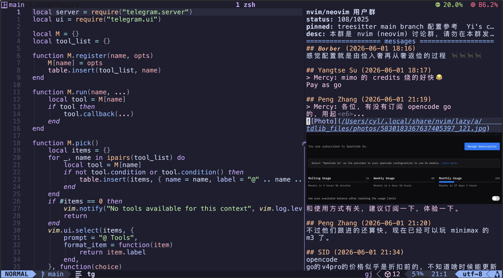
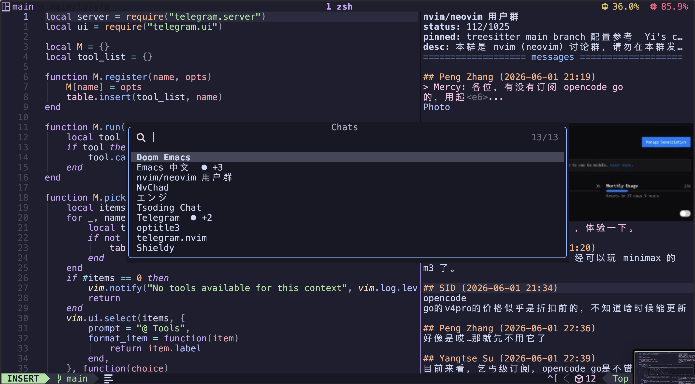
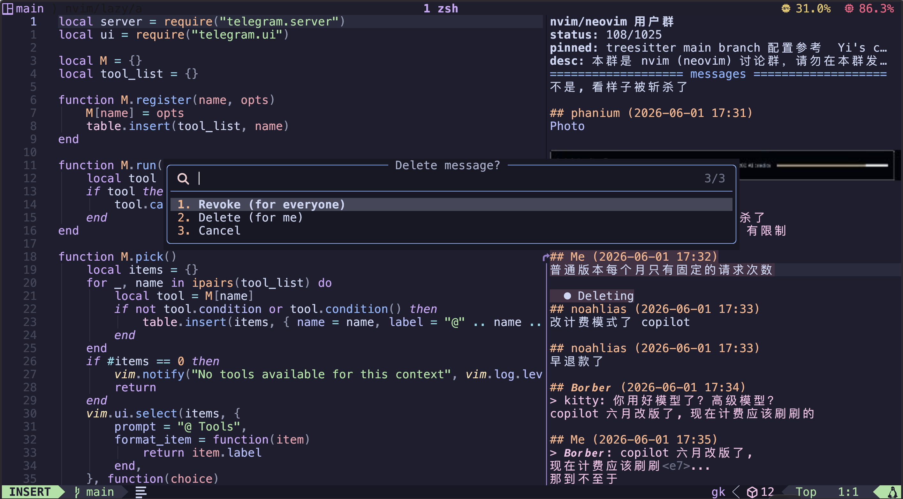
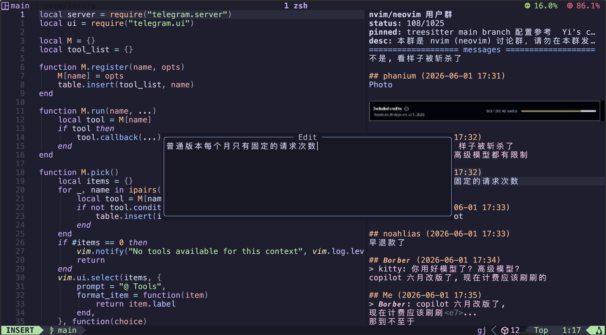

telegram.nvim
A full-featured Telegram chat client that runs inside Neovim.
GitHub ·
Installation ·
Documentation ·
Telegram Group
Screenshots




Features
- Real-time messaging via WebSocket
- Group & channel management
- Send formatted text (markdown)
- Edit & delete messages
- Forward & reply with quote
- Pin & unpin messages
- Photo, video, file previews
- HD media download
- Inline fuzzy-find chat picker
- Typing indicators
- Online member count
- Proxy support (SOCKS5/HTTP)
- Session persistence
- Favorites (Saved Messages) — press s to save any message
- View counts — channel messages show 👀 N footer
- Read receipts — outgoing private messages show (read HH:MM)
- Edited indicator — edited messages show [edited] footer
- Copy message — press yy to copy text to clipboard
- Customizable keymaps
- Theme adaptation
- GitHub PR & Issue integration
Quick Start
Add to your Neovim config (lazy.nvim):
{
"ChuYanLon/telegram.nvim",
build = "npm i",
event = "VeryLazy",
keys = {
{ "<leader>tt", "<cmd>Tg<Cr>", desc = "Toggle Telegram" },
},
opts = {},
}
How It Works
Backend: TypeScript (Express + WebSocket) running TDLib on ports 8080/8081.
Frontend: Pure Lua plugin communicating via HTTP and WebSocket.
Auth: Phone number → verification code → 2FA (optional). Session persists across restarts.
Requirements
- Node.js ≥ 18
libtdjson (TDLib shared library, v1.8.64+)- curl